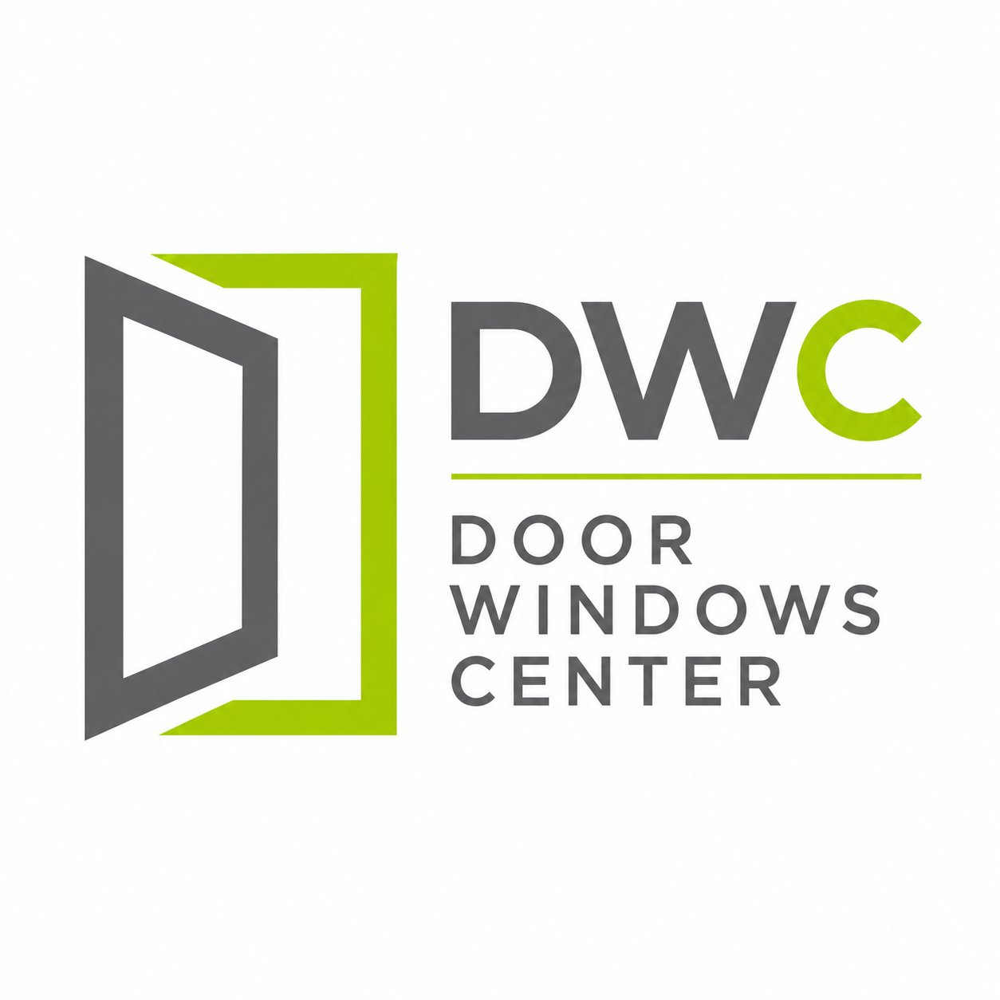
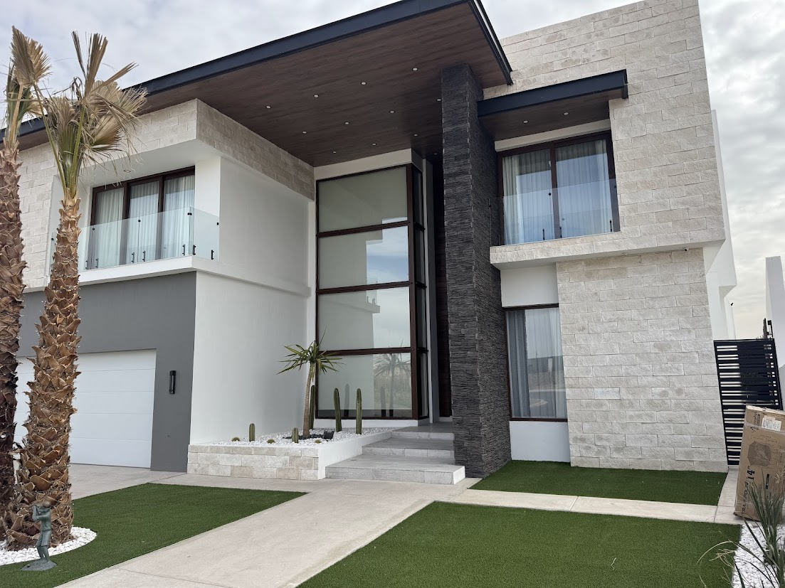

Door Windows Center — Ventanas y puertas de PVC
{{ t.nav1 }}
{{ t.nav2 }}

{{ t.nav3 }}
{{ t.nav4 }}
ES
/
EN
{{ t.tagline }}
{{ t.siteTagline }}
{{ t.cta }}
{{ t.aboutKicker }}
{{ t.about1 }}
{{ t.about2 }}
{{ p.n }}
{{ p.t }}
{{ p.d }}
{{ t.workTitle }}
{{ w.img }}
{{ w.ph }}
{{ w.t }}
{{ w.d }}

{{ t.videoKicker }}
{{ t.videoTitle }}
{{ t.faqTitle }}
{{ f.q }}
{{ f.a }}
{{ t.contactTitle }}
{{ t.contactSub }}
{{ t.whatsapp }}
{{ t.lblPhone }}
+52 656 207 5567
{{ t.lblMail }}
doorwindowscenter@gmail.com
{{ t.lblAddr }}
Av. de la raza 6687
col del futuro
Cd Juárez, Chihuahua, MX
{{ t.lblHours }}
{{ t.hours }}
© 2026 DoorWindowsCENTER
PVC · {{ t.rail3 }}